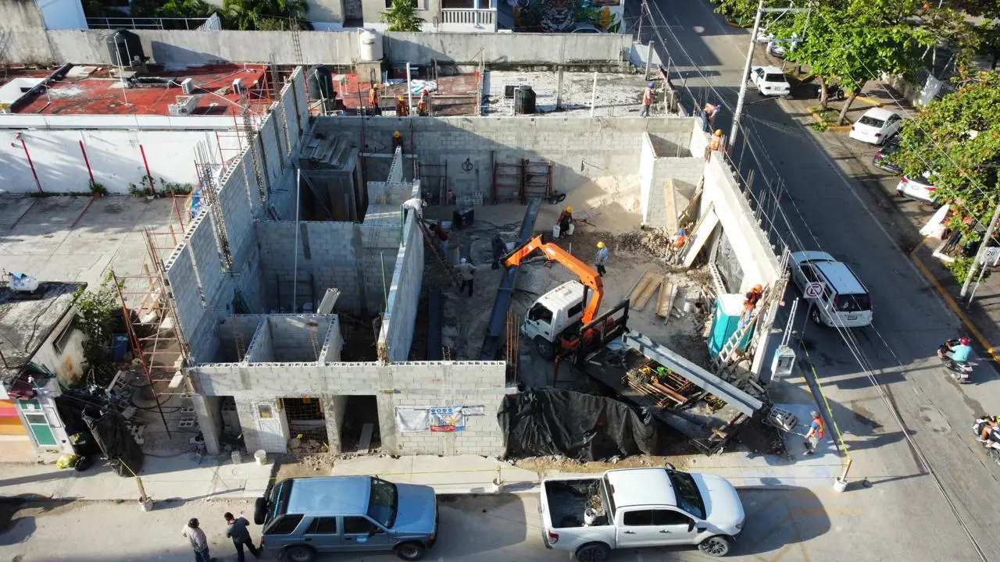

Préparation de terrain et murs de soutènement dans la Riviera Maya
Défrichage, roche calcaire, drainage : ce qui attend votre lot avant la première pierre.

Ce dont la plupart des terrains ont besoin
- Défrichage (terrains en jungle)
- Levé topographique
- Étude sol/roche
- Excavation du calcaire
- Nivellement et compactage
- Plan de drainage
Les terrains plats de Playa del Carmen demandent peu de préparation ; les lots en jungle de Tulum et les terrains côtiers en pente, beaucoup plus.
Coûts
| Poste | Coût (MXN) |
|---|---|
| Défrichage jungle | 15 000–60 000 selon surface et densité |
| Cassage/excavation de roche | selon volume — étude préalable indispensable |
| Mur de soutènement béton | 2 500–4 500 /m² |
| Remblai + compactage | 350–600 /m³ |
Drainage sur karst
Le calcaire draine naturellement, mais les pluies torrentielles exigent : pentes dirigées, puits d'absorption (pozos de absorción) et canalisation des toitures. Un drainage raté = inondations et fondations fragilisées.
Défrichement, arbres et autorisations
Au Quintana Roo, la préparation du terrain commence par une question administrative, pas par une pelle mécanique : que peut-on légalement retirer ?
L'abattage d'arbres et le défrichement de végétation native relèvent d'une autorisation — municipale pour les cas simples, SEMARNAT ou SEMA selon la zone et le type de végétation. La mangrove est protégée au niveau fédéral et ne se touche pas, quelle que soit la surface. Défricher d'abord et régulariser ensuite est une très mauvaise stratégie : l'infraction se voit sur les images satellite, les amendes sont lourdes, et le dossier ressort à la revente.
Le parcours efficace :
- Inventaire de la végétation par un biologiste : espèces, diamètres, positions relevées au GPS. Ce document sert aussi au dossier de permis.
- Plan de conservation : arbres maintenus, arbres transplantés, arbres abattus avec compensation.
- Demande d'autorisation, avec obligation de replantation (souvent deux à dix sujets par arbre abattu).
- Protection physique des sujets conservés pendant le chantier — sans quoi ils meurent de tassement racinaire ou d'un coup de godet.
Un arbre mature bien placé vaut plus qu'il ne coûte à préserver : il apporte l'ombre qu'aucune pergola neuve ne donnera avant dix ans.
Murs de soutènement : drainage avant béton
Les murs de soutènement qui échouent dans la région ne cèdent presque jamais par manque de béton, mais par manque de drainage. Après une pluie de 60 mm en une heure, un remblai saturé exerce une poussée bien supérieure à celle du sol sec, et c'est cette poussée-là qui fissure les murs.
Les dispositions indispensables :
- Barbacanes tous les 1,5 à 2 m, en partie basse, avec massif drainant de grave propre et géotextile anti-colmatage à l'arrière.
- Drain agricole en pied de mur, avec exutoire réel — un drain qui ne débouche nulle part ne sert à rien.
- Étanchéité de la face enterrée, sinon les sels traversent et ressortent en efflorescences sur la face vue.
- Joints de dilatation tous les 6 à 8 m, indispensables sous ce climat.
- Compactage par couches de 20 à 30 cm du remblai, jamais en une seule passe.
Sur le dimensionnement : au-delà de 1,50 m de hauteur, une note de calcul signée est nécessaire, et le calcaire local — qui semble rocheux — peut receler des poches de sascab friable. C'est la raison pour laquelle un mur qui « tient chez le voisin » ne constitue pas un dimensionnement.
Questions fréquentes
Prêt à lancer votre projet ?
196+ projets réalisés. Contrats à prix fixe. Devis gratuit sous 48 h.
Devis gratuit